End-to-end analytics project using SQL, Python, Machine Learning, and Power BI to identify churn drivers, estimate revenue loss, and simulate customer retention strategies for a telecom business.
Overall customer churn rate identified across 7,043 telecom customers.
Estimated annual revenue loss caused by customer churn.
Random Forest model accuracy achieved for churn prediction.
High-risk customers identified for retention campaigns.
The analysis uncovered high-risk customer groups, revenue loss patterns, and actionable retention opportunities.
Month-to-month customers churn significantly more than annual subscribers.
Highest churn occurs within the first 12 months of customer tenure.
Churned customers pay more monthly than retained customers.
Annual revenue recoverable by retaining just 10% of churners.
Interactive 3-page Power BI dashboard built for churn analysis, KPI monitoring, and revenue recovery simulations.
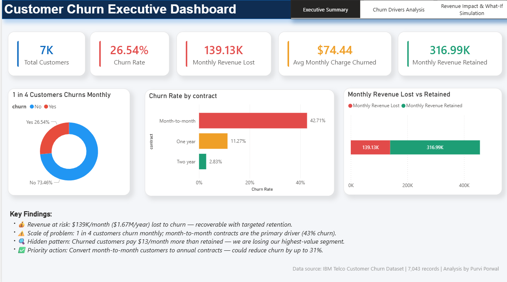
Business KPIs, churn metrics, revenue impact analysis, and customer insights.
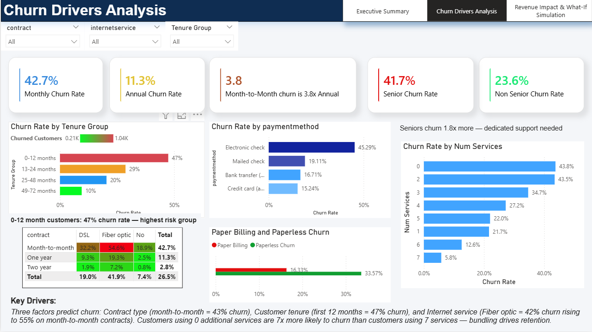
Deep dive into tenure, payment behavior, services, and high-risk segments.
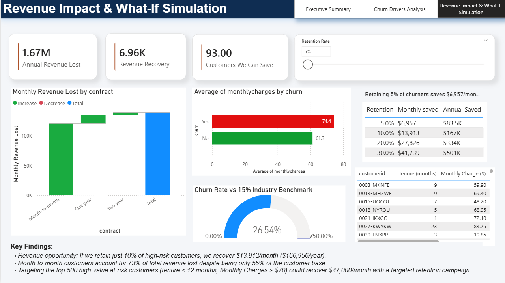
What-if analysis estimating recoverable revenue using retention strategies.
Exploratory analysis, feature engineering, and machine learning evaluation performed using Python and Scikit-learn.
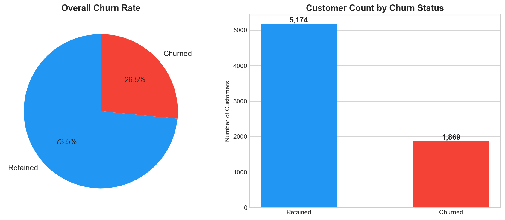
Distribution of retained vs churned customers.
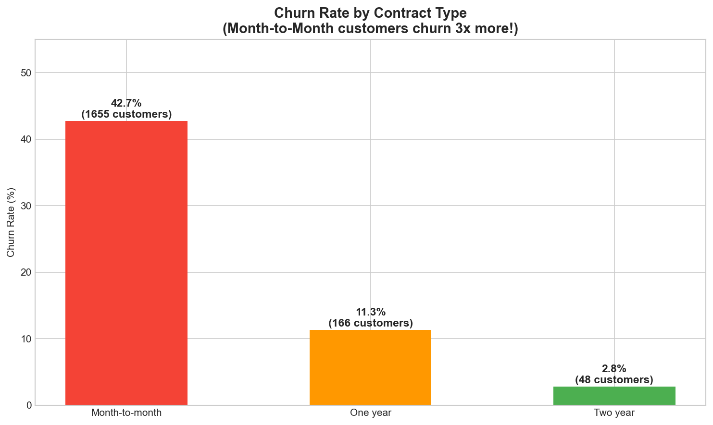
Month-to-month contracts were identified as the highest-risk segment.
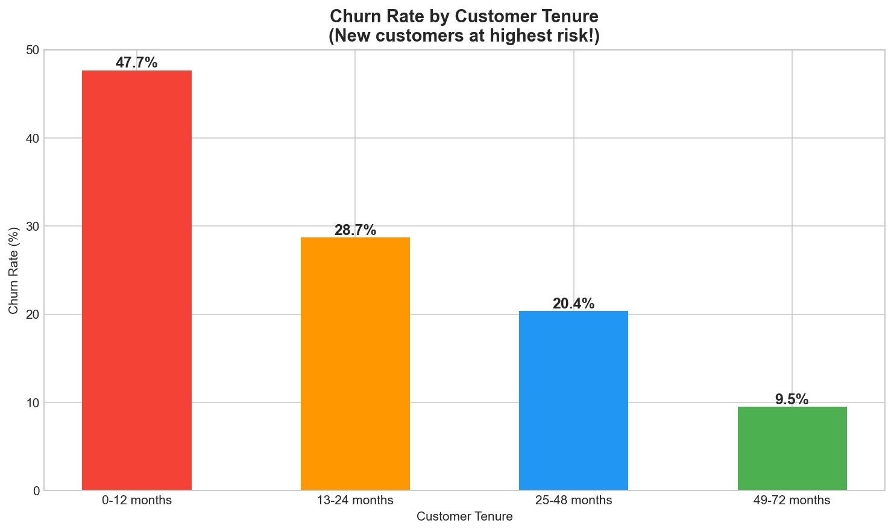
Customer churn was highest during the early subscription period.
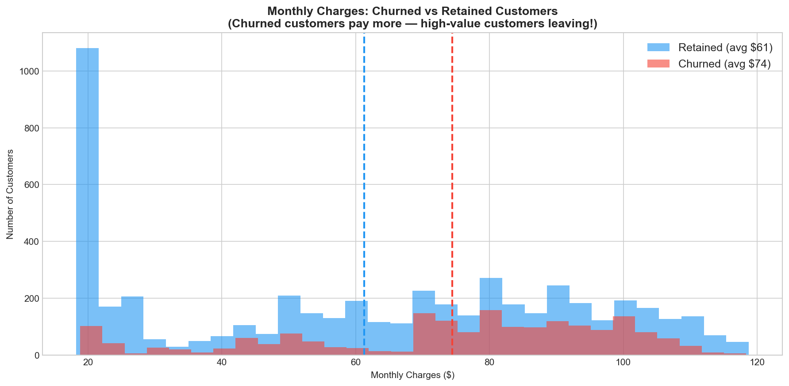
Estimated monthly and annual revenue loss caused by churn.
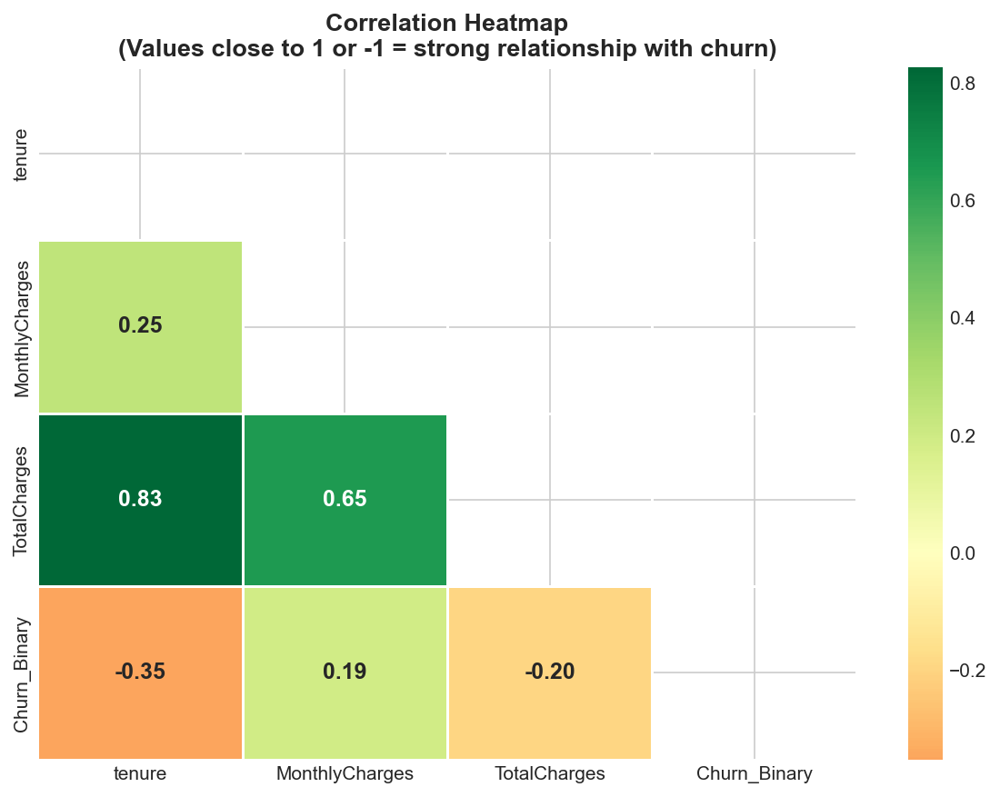
Relationship analysis between customer attributes and churn behavior.
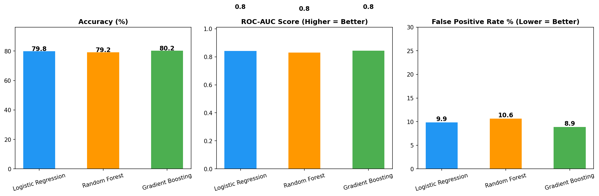
Comparison of classification models using accuracy and ROC-AUC.
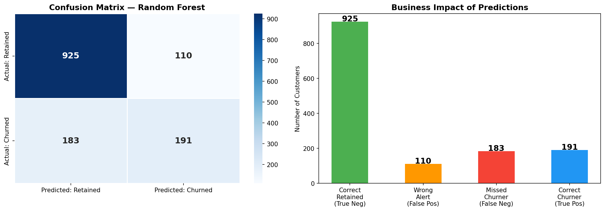
Evaluation of model prediction quality and classification performance.
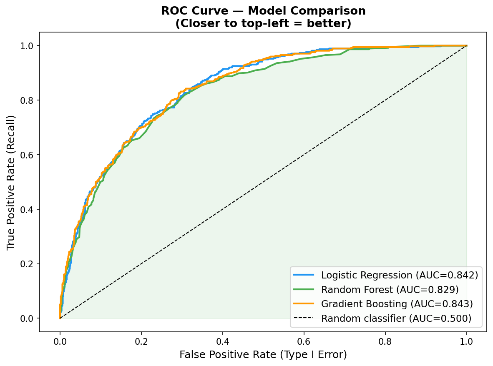
Visualization of model discrimination capability and ROC-AUC score.
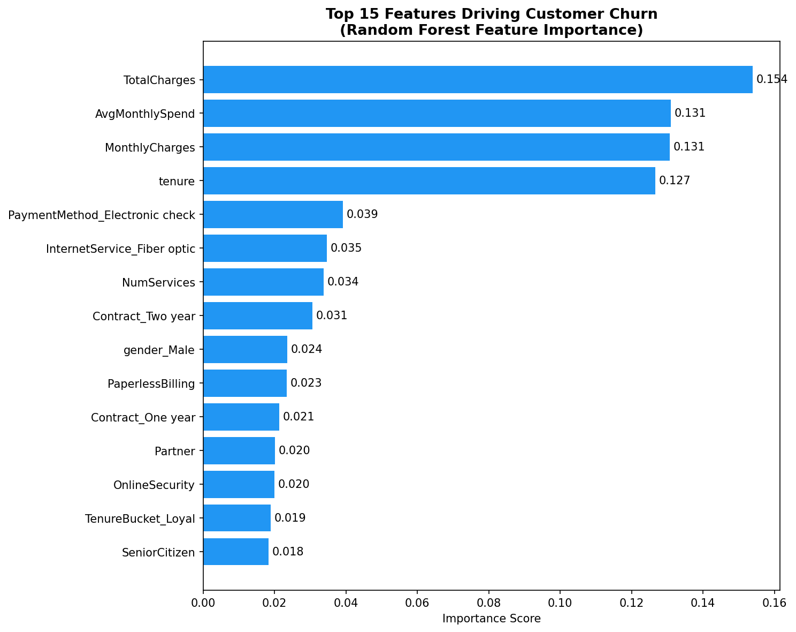
Top business variables contributing to churn prediction.
ROC-AUC score achieved using Random Forest classification.
False positive rate reduced through optimized model selection.
Logistic Regression, Random Forest, and Gradient Boosting evaluated.
Custom DAX measures created in Power BI dashboard.
Encourage month-to-month customers to move to annual plans to reduce churn risk.
Improve onboarding and support during the highest-risk churn period.
Increase customer stickiness by encouraging multi-service adoption.
Reduce churn by incentivizing customers to switch to automated payments.